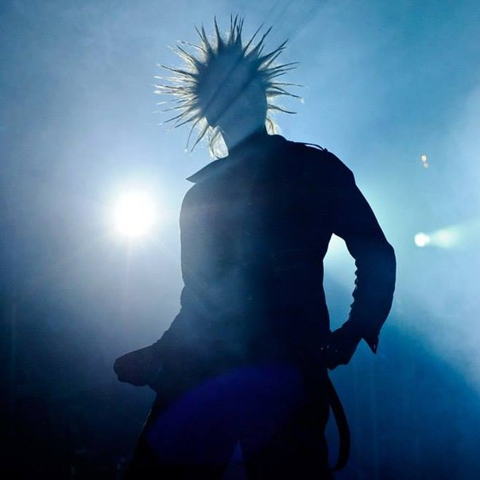
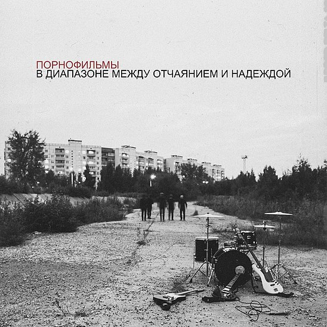

Показать блок 1
Скрыть блок 1
Будь как дома Путник
Случилось это ещё в далёком 1991-м, когда коллектив носил название «Контора». Если верить слухам, именно благодаря «Леснику» группа изменила своё название сначала на «Король Шутов», а затем уже на привычное «Король и Шут». Музыку для композиции написал ныне почивший Михаил Горшенёв.

Показать блок 2
Скрыть блок 2
Топ 3 фотки альбомов Порнофильмов:

В диапазоне между страхом и отчаянием
Показать блок 3
Скрыть блок 3
Услуги
Стрижка (тримминг) для собак
Гипоаллергенный Детокс комплекс ЦЕОЛИТ
Маникюр собак
Ручная мойка а/м с ковриками и сушкой кузова, дверных проемов
Диагностика, ремонт имобилайзеров
Тонировка автомобиля
Показать блок 4
Скрыть блок 4
Заголовок
Виктор сочинил ее, отдыхая с Юрием Каспаряном в курортном поселке Плиеньциемс, расположенном на берегу Рижского залива. Совмещая приятное с полезным, музыканты записывали демо-версию будущего альбома.
Это было целиком детище лидера группы КИНО. Он написал слова песни «Кукушка», подобрал аккорды, разработал мелодические переходы и другие элементы аранжировки. О чём песня «Кукушка», Виктор Цой не говорил. Его коллеги также мыслями на этот счёт не делились. Конечно, поклонники высказали массу идей о смысле песни, но вряд стоит цитировать их догадки.